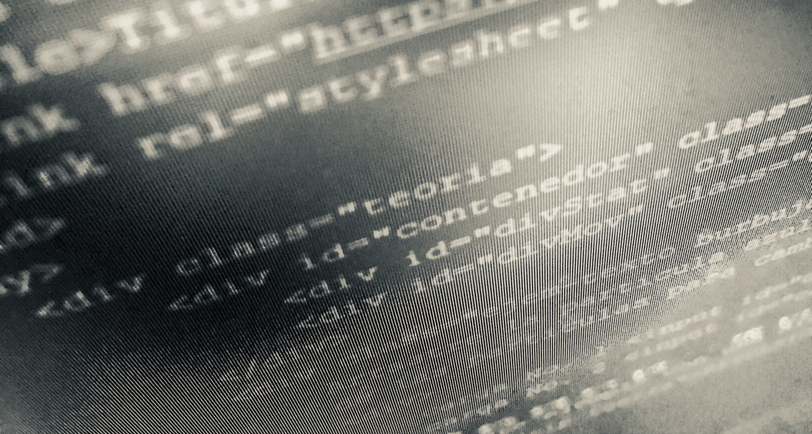

streameast
Soy un estudiante de Ingenieria en sistemas y entusiasta de las nuevas tecnologias, usualmente trabajo con servidores
linux y base de datos Oracle, pero me gusta experimentar con distintas soluciones para resolver y facilitar distintos
problemas que veo en clase o en mi trabajo.
Entiendo la importancia que aporta una buena y bien diseñada interfaz grafica pero creo que la CLI aun tiene mucho que
ofrecer y es algo que los interesados en las tecnologias informaticas no deberian perder de vista.